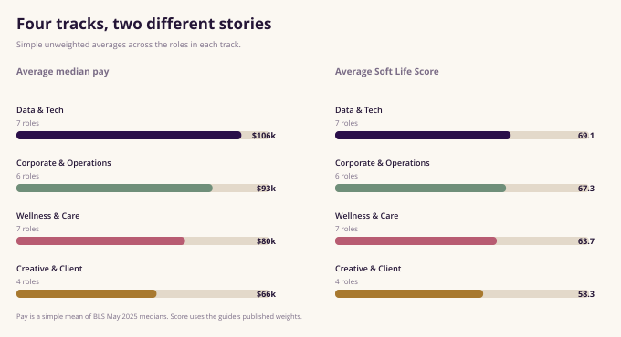
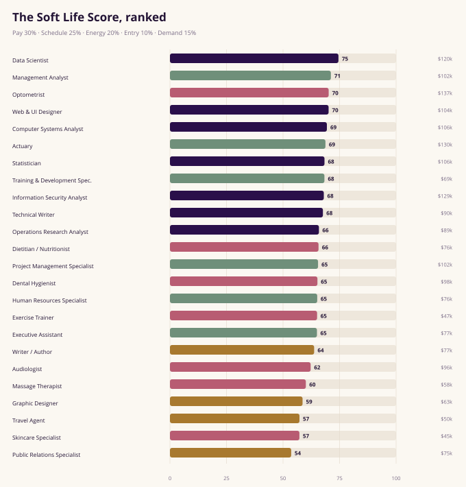
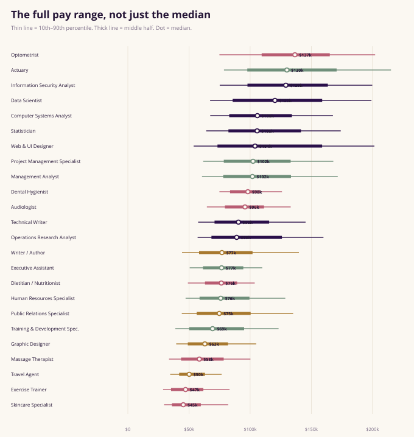
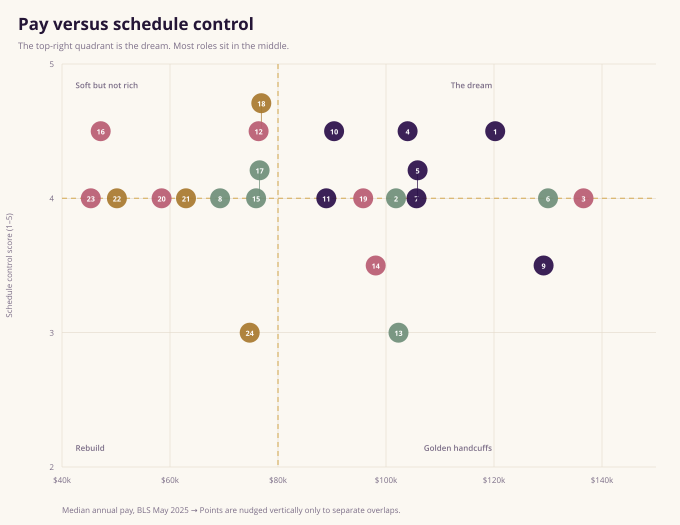
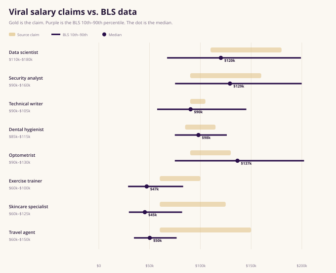

A data-backed guide to choosing calmer, better-paid work.
Edition 1 · 2026
Data current to BLS OEWS May 2025 and BLS Employment Projections 2025–35.
Page numbers are linked in the PDF. The profile key on the pay–schedule chart follows the ranking shown in Chapter 3.
Most career advice asks you to choose a job title and then hope the life around it works out. This guide starts from the life you want and works backward.
You will not find a list of “best careers for women” here. You will find a way to compare work using five signals that actually shape your week: pay, schedule control, energy cost, entry barrier, and demand. Then you will use those signals to build a shortlist you can test before you quit anything.
Pay figures are median annual wages for full-time wage and salary workers unless otherwise stated. They are national figures for the United States. They do not include bonuses, equity, commission, or the value of benefits. They are not starting salaries.
The 10th percentile is not a beginner wage. It means 10 percent of workers in that occupation earn less than that figure. The 90th percentile is not a promise either. It means 10 percent earn more.
Demand figures are projected annual openings from 2025 to 2035. They include replacements as people leave the occupation, not only new jobs. A high opening count can still mean intense competition in your city.
The Soft Life Score is an editorial composite. It is not a government statistic. The formula is published in Chapter 2 so you can disagree with it and change the weights for your own life.
Data note: Sources were retrieved in November 2026 from CareerFacts.org, which reproduces BLS OEWS May 2025 and BLS Employment Projections 2025–35. Direct BLS pages blocked automated requests. Every role page names its SOC code and source so you can verify the figure yourself.
Each profile gives you:
Read the data block first. Then read the two paragraphs. If the numbers and the reality do not match your life, trust your life.
Set aside 45 minutes. Have three things ready:
The goal is not to find the perfect career. It is to find three directions worth testing, then to test them cheaply.
The internet is full of career lists. “Ten soft-life jobs that pay six figures.” “The careers that let you travel.” “This one certificate changed her life.” The lists are seductive because they compress a complicated decision into a single move.
They also tend to make the same mistake: they treat salary as the whole story.
A $120,000 job with a 60-hour week, a hostile manager, and no control over your calendar is not automatically a better life than a $78,000 job with predictable hours and work you can leave at the office. A $45,000 job with flexible hours can be a bridge, but it is not a finish line if it cannot cover your bills. The soft life is not a number. It is a work design.
1. It confuses a job title with a job. “UX designer” can mean a senior researcher at a tech company, a freelance web designer with five clients, or a junior production designer doing repetitive edits. The title is not the life. The employer, seniority, contract, and team are the life.
2. It confuses the top of the market with the middle. A salary range built from Reddit screenshots, course testimonials, and LinkedIn highlights is a survivorship sample. The median worker is not the person posting. The 10th percentile exists too.
3. It ignores the entry cost. A career that requires a doctorate, unpaid internships, or two years of portfolio-building is not equally available to everyone. Entry cost is not a detail. It is part of the price.
The original research behind this guide identified real patterns: women are tired of work that consumes their whole life; remote and hybrid work changes the equation; healthcare and technology still offer strong pay; and many “faceless” online business models are less stable than they look.
Those patterns are useful. The salary claims attached to them are where the research becomes unreliable. A career list can be directionally right and still be numerically wrong. For example, the research repeated a $60,000–$100,000 range for yoga and Pilates instructors. The BLS median for exercise trainers and group fitness instructors is $47,160. The top 10 percent earn more than $83,100, but that is not the typical outcome.
We are not correcting the research to be negative. We are correcting it so the decision is based on the life you are likely to get, not the life in the highlight reel.
Instead of “Which career pays the most?” ask:
Those five questions are the spine of this guide. They become five scores. They do not make the decision for you. They make the trade-offs visible.
For this guide, a soft life career has three characteristics:
That definition rules out some high-paying jobs and includes some modest-paying ones. It also rules out the fantasy that one career decision will fix everything. A career is a system you keep adjusting.
By the end, you will have:
That is a lot less exciting than “this one career changed her life.” It is also a lot more useful.
Action: Write down the number that means “enough” for you. Include housing, food, transport, debt payments, savings, and the things that make life feel like yours. Keep it somewhere visible. Every career decision in this guide gets tested against that number.
A useful career comparison has to survive contact with a real week. These five signals are not a personality framework. They are a way to compare the conditions of work.
We use the median annual wage for the occupation. Median is more honest than average because a small number of very high earners can pull an average upward. The 10th and 90th percentiles show the spread.
Income is scored against $150,000:
income score = min(100, median pay ÷ 150,000 × 100)
The cap is deliberate. More money matters, especially below a living wage, but the relationship between extra income and a softer life flattens. A $220,000 job that consumes your evenings is not automatically twice as good as a $110,000 job that does not. You can change the cap if your “enough” number is higher.
Schedule control is the ability to shape when, where, and how much you work. It includes remote and hybrid options, predictable hours, shift control, client booking, and the ability to protect deep work.
This is an editorial score from 1 to 5:
schedule score = schedule control × 20
Energy cost is the recovery cost of the work. A role can be cognitively hard and still be sustainable if it has boundaries. A role can be physically light and still be draining if it requires constant emotional performance.
This is an editorial score from 1 to 5, inverted so that higher is softer:
energy score = energy × 20
Entry barrier is the cost of becoming credible: education, licensing, exams, portfolio, unpaid time, and the risk of starting over. Lower barrier is better for a first move, but a higher barrier can protect a market.
This is an editorial score from 1 to 5, inverted so that higher is easier:
entry score = entry ease × 20
Demand combines projected growth and annual openings:
growth score = clamp(50 + growth % × 2.5, 0, 100)
openings score = min(100, annual openings ÷ 50,000 × 100)
demand score = 0.6 × growth score + 0.4 × openings score
A 0 percent growth role scores 50 on growth: stable, not collapsing. A role shrinking by 10 percent scores 25. A role growing by 20 percent scores 100. Openings are capped at 50,000 so that very large occupations do not dominate the ranking.
The composite is:
Soft Life Score =
0.30 × income
+ 0.25 × schedule
+ 0.20 × energy
+ 0.10 × entry
+ 0.15 × demand
The weights reflect the promise of this guide. Money is necessary, so it gets the largest single weight. Schedule and energy are what make work survivable, so together they get 45 percent. Entry barrier matters, but it is something you can change with time, so it gets 10 percent. Demand matters, but a national projection is not a guarantee for your city or your network, so it gets 15 percent.
The score is a filter, not a verdict. Use it to narrow 24 roles to 8, then use interviews, shadowing, and small tests to narrow 8 to 3.
If your priority is cash flow this year, raise income and demand. If your priority is care work or health, raise schedule and energy. If you are rebuilding after burnout, lower the entry barrier and protect schedule before chasing the highest median.
Action: Copy the formula into your notes and change the weights for your situation. Write one sentence explaining each change. That explanation is your decision criteria.
This is the part where the fantasy meets the spreadsheet. All pay figures below are BLS OEWS May 2025 national medians. Growth and openings are BLS Employment Projections 2025–35. The Soft Life Score uses the formula from Chapter 2.
Start with the group view, then the ranking, then the full pay range, then the trade-off map.
The 24 roles fall into four broad tracks. The averages below are simple unweighted means, not market averages. They are a quick way to see the shape of each track before you read individual profiles.

Data & Tech has the highest average median pay ($106,320) and the highest average Soft Life Score (69.1). It also has the widest entry range: a data scientist and a technical writer sit in the same track but require very different preparation.
Corporate & Operations is the most portable track. Median pay averages $92,665 and the average score is 67.3. It contains some of the most portable roles in the guide: management analyst, project management specialist, HR specialist, and executive assistant.
Wellness & Care is not a monolith. The average median is $79,684, but it ranges from $45,330 for skincare specialists to $136,570 for optometrists. The average score is 63.7. This is the track where viral salary claims are most likely to be wrong.
Creative & Client has the lowest average median ($66,195) and the lowest average score (58.3). It also has the most variable income and the highest share of self-employment. It can be a good life, but it is a weaker first move if you need stable cash flow quickly.

The ranking is not a list of “best jobs.” It is a list of roles that balance pay, schedule, energy, entry, and demand under one set of weights. A role near the bottom can still be the right choice if you already have the skills, the network, or a specific life constraint that the score does not capture.
Notice what is near the top. Data scientist, management analyst, optometrist, web and digital interface designer, computer systems analyst, actuary, statistician, training and development specialist, information security analyst, and technical writer.
Notice what is near the bottom. Public relations specialist, skincare specialist, travel agent, graphic designer, and massage therapist. These are not bad jobs. They are jobs where the median pay, the demand picture, or the entry economics make the soft-life case harder to prove.

The median is a useful anchor, but the spread is where the real decision lives. Data scientists range from $67,240 at the 10th percentile to $199,130 at the 90th. Optometrists range from $74,870 to $202,180. Technical writers range from $57,440 to $145,270.
That spread is not a ladder you can climb automatically. It reflects seniority, location, employer, specialism, and contract. A role with a high median can still start below your enough number. A role with a modest median can have a strong top end for people who build a specialism or a client base.
The spread also exposes the weakness in a single salary claim. “Technical writers earn $90,000–$105,000” describes a slice near the median. It does not describe the 10th percentile or the 90th. It does not tell you which end is available to you this year.

| # | Role | Pay | Score | # | Role | Pay | Score |
|---|---|---|---|---|---|---|---|
| 1 | Data Scientist | $120k | 75 | 13 | Project Management Specialist | $102k | 65 |
| 2 | Management Analyst | $102k | 71 | 14 | Dental Hygienist | $98k | 65 |
| 3 | Optometrist | $137k | 70 | 15 | Human Resources Specialist | $76k | 65 |
| 4 | Web & Digital Interface Designer | $104k | 70 | 16 | Exercise Trainer / Group Fitness Instructor | $47k | 65 |
| 5 | Computer Systems Analyst | $106k | 69 | 17 | Executive Assistant | $77k | 65 |
| 6 | Actuary | $130k | 69 | 18 | Writer / Author | $77k | 64 |
| 7 | Statistician | $106k | 68 | 19 | Audiologist | $96k | 62 |
| 8 | Training & Development Specialist | $69k | 68 | 20 | Massage Therapist | $58k | 60 |
| 9 | Information Security Analyst | $129k | 68 | 21 | Graphic Designer | $63k | 59 |
| 10 | Technical Writer | $90k | 68 | 22 | Travel Agent | $50k | 57 |
| 11 | Operations Research Analyst | $89k | 66 | 23 | Skincare Specialist | $45k | 57 |
| 12 | Dietitian / Nutritionist | $76k | 66 | 24 | Public Relations Specialist | $75k | 54 |
The horizontal axis is median pay. The vertical axis is schedule control. The top-right quadrant is the dream: high pay and high control. The top-left quadrant is the “soft but not rich” zone. The bottom-right is the “golden handcuffs” zone: good pay, little control. The bottom-left is the “rebuild” zone.
Most roles sit in the middle. That is the honest finding. There are few six-figure, fully flexible, low-entry jobs. The careers that look like that on social media usually depend on seniority, a rare employer, or a business that is already working.
Three findings are worth sitting with.
1. The wellness premium is smaller than the research suggested. Exercise trainers and group fitness instructors have a median of $47,160, not $60,000–$100,000. Skincare specialists have a median of $45,330, not $60,000–$125,000. The top of those markets exists. It is not the median.
2. The healthcare ceiling is higher than the research suggested. Optometrists have a median of $136,570, above the research range of $90,000–$130,000. Dental hygienists have a median of $98,100, inside the research range, with a 90th percentile above $126,000.
3. Remote work is uneven. Computer and mathematical roles have a much higher telework rate than healthcare or personal care. A role can be “remote-friendly” in theory and still require local licensing, in-person training, or a client base. The role profile tells you which constraint applies.
There is no single career that solves the soft life. There are better and worse bets. The better bets tend to have:
The rest of this guide helps you find the three bets worth testing.
Each profile follows the same structure so you can compare without being swayed by a good story. The numbers are national. Your city, seniority, and contract will change the outcome. The editorial scores tell you how the role tends to feel; they do not tell you how your specific employer will behave.
Read the data block first. Then read “The soft version” and “The catch.” If the catch is a dealbreaker, move on. If the soft version describes the life you want, put the role on your shortlist and test it.
All pay figures are annual medians from BLS OEWS May 2025. The percentile range is the 10th to 90th percentile. Growth and openings are BLS Employment Projections 2025–35. The Soft Life Score uses the formula in Chapter 2.
Median pay of $120,230, projected growth of +34.6%, and about 24,800 openings a year. Soft Life Score: 75/100. High pay, deep-focus work, and strong remote leverage. AI is changing the work; keep proving business impact, not just model skill. BLS OEWS May 2025 · SOC 15-2051 · Projections 2025–35 · Telework is an occupational-group proxy, not a role guarantee. Median pay of $104,000, projected growth of +6%, and about 8,300 openings a year. Soft Life Score: 70/100. Project-based creative work with strong remote and freelance options. Portfolio quality matters more than the degree; client management is real work. BLS OEWS May 2025 · SOC 15-1255 · Projections 2025–35 · Telework is an occupational-group proxy, not a role guarantee. Median pay of $105,850, projected growth of +7.9%, and about 32,900 openings a year. Soft Life Score: 69/100. Translating business needs into systems is calm, structured and remote-friendly. You can be the buffer between users and engineers; boundaries matter. BLS OEWS May 2025 · SOC 15-1211 · Projections 2025–35 · Telework is an occupational-group proxy, not a role guarantee. Median pay of $105,650, projected growth of +11%, and about 1,900 openings a year. Soft Life Score: 68/100. Deep analytical work with lower urgency and strong remote potential. Fewer roles than general analytics; advanced education is often expected. BLS OEWS May 2025 · SOC 15-2041 · Projections 2025–35 · Telework is an occupational-group proxy, not a role guarantee. Median pay of $129,180, projected growth of +21%, and about 14,100 openings a year. Soft Life Score: 68/100. GRC, audit and security engineering can be calm, structured and remote. Incident response can include on-call; aim for governance, risk or compliance. BLS OEWS May 2025 · SOC 15-1212 · Projections 2025–35 · Telework is an occupational-group proxy, not a role guarantee. Median pay of $90,390, projected growth of +0.8%, and about 3,200 openings a year. Soft Life Score: 68/100. Quiet, deep-focus work with predictable deadlines and remote flexibility. BLS projects slow growth; AI tools are changing documentation work. BLS OEWS May 2025 · SOC 27-3042 · Projections 2025–35 · Telework is an occupational-group proxy, not a role guarantee. Median pay of $88,940, projected growth of +11.9%, and about 7,500 openings a year. Soft Life Score: 66/100. Structured problem-solving with less urgency than many tech roles. The work can be abstract; you need to explain models to non-technical people. BLS OEWS May 2025 · SOC 15-2031 · Projections 2025–35 · Telework is an occupational-group proxy, not a role guarantee. Median pay of $101,860, projected growth of +10.1%, and about 94,100 openings a year. Soft Life Score: 71/100. Advisory work with transferable skills and remote-friendly employers. Client deadlines and travel vary; junior roles can be execution-heavy. BLS OEWS May 2025 · SOC 13-1111 · Projections 2025–35 · Telework is an occupational-group proxy, not a role guarantee. Median pay of $130,000, projected growth of +9.2%, and about 1,500 openings a year. Soft Life Score: 69/100. Quiet, analytical work with a famously steady 40-hour norm. Exam progression is demanding and can take years. BLS OEWS May 2025 · SOC 15-2011 · Projections 2025–35 · Telework is an occupational-group proxy, not a role guarantee. Median pay of $69,280, projected growth of +10.8%, and about 46,000 openings a year. Soft Life Score: 68/100. Calm, people-facing work designing learning without constant emergencies. Program launches create deadline clusters; corporate restructuring can affect roles. BLS OEWS May 2025 · SOC 13-1151 · Projections 2025–35 · Telework is an occupational-group proxy, not a role guarantee. Median pay of $102,320, projected growth of +6.7%, and about 76,500 openings a year. Soft Life Score: 65/100. Once workflows are set, the role can be check-ins rather than constant production. Meetings, dependencies and escalations can fill the calendar. BLS OEWS May 2025 · SOC 13-1082 · Projections 2025–35 · Telework is an occupational-group proxy, not a role guarantee. Median pay of $75,940, projected growth of +6.4%, and about 73,700 openings a year. Soft Life Score: 65/100. Structured corporate work with predictable hours in many organizations. Employee relations can be emotionally heavy; avoid crisis-heavy HR teams. BLS OEWS May 2025 · SOC 13-1071 · Projections 2025–35 · Telework is an occupational-group proxy, not a role guarantee. Median pay of $76,590, projected growth of +0%, and about 43,300 openings a year. Soft Life Score: 65/100. Senior assistants can set the rhythm of a leader's week and work remotely. You absorb other people's urgency unless you negotiate clear boundaries. BLS OEWS May 2025 · SOC 43-6011 · Projections 2025–35 · Telework is an occupational-group proxy, not a role guarantee. Median pay of $136,570, projected growth of +9.5%, and about 2,000 openings a year. Soft Life Score: 70/100. Appointment-based clinical work with no on-call emergencies for most roles. Long, expensive education; retail targets can create pressure. BLS OEWS May 2025 · SOC 29-1041 · Projections 2025–35 · Telework is an occupational-group proxy, not a role guarantee. Median pay of $76,400, projected growth of +7.7%, and about 5,700 openings a year. Soft Life Score: 66/100. Virtual consultations and calm, education-led client work are possible. Insurance and client acquisition can complicate a private practice. BLS OEWS May 2025 · SOC 29-1031 · Projections 2025–35 · Telework is an occupational-group proxy, not a role guarantee. Median pay of $98,100, projected growth of +8%, and about 15,000 openings a year. Soft Life Score: 65/100. High hourly pay, appointment-based days and almost no take-home work. Most roles are in-person and many are part-time; benefits vary. BLS OEWS May 2025 · SOC 29-1292 · Projections 2025–35 · Telework is an occupational-group proxy, not a role guarantee. Median pay of $47,160, projected growth of +7.3%, and about 68,000 openings a year. Soft Life Score: 65/100. You choose your hours and can build a calm, appointment-based client base. Entry pay is low and income is often part-time or variable. BLS OEWS May 2025 · SOC 39-9031 · Projections 2025–35 · Telework is an occupational-group proxy, not a role guarantee. Median pay of $95,780, projected growth of +11%, and about 600 openings a year. Soft Life Score: 62/100. Calm, appointment-based care with a clear clinical rhythm. Doctoral education is expensive; demand and pay vary by location. BLS OEWS May 2025 · SOC 29-1181 · Projections 2025–35 · Telework is an occupational-group proxy, not a role guarantee. Median pay of $58,450, projected growth of +15.3%, and about 20,400 openings a year. Soft Life Score: 60/100. Appointment-based work with strong control over your weekly schedule. The work is physically demanding and income depends on client volume. BLS OEWS May 2025 · SOC 31-9011 · Projections 2025–35 · Telework is an occupational-group proxy, not a role guarantee. Median pay of $45,330, projected growth of +8.8%, and about 14,200 openings a year. Soft Life Score: 57/100. Client-booked days with a premium service and low take-home admin. Income depends on bookings and tips; retail targets are common. BLS OEWS May 2025 · SOC 39-5094 · Projections 2025–35 · Telework is an occupational-group proxy, not a role guarantee. Median pay of $76,910, projected growth of -0.3%, and about 11,900 openings a year. Soft Life Score: 64/100. Deep-focus work with location freedom and a wide range of business models. Income is uneven; you must sell, publish and manage clients. BLS OEWS May 2025 · SOC 27-3043 · Projections 2025–35 · Telework is an occupational-group proxy, not a role guarantee. Median pay of $62,960, projected growth of -1.7%, and about 16,000 openings a year. Soft Life Score: 59/100. Creative, project-based work with remote and freelance options. BLS projects slow decline; generalists face price pressure from AI and templates. BLS OEWS May 2025 · SOC 27-1024 · Projections 2025–35 · Telework is an occupational-group proxy, not a role guarantee. Median pay of $50,160, projected growth of +0.2%, and about 5,900 openings a year. Soft Life Score: 57/100. Client-scheduled work that can be done remotely with low entry cost. Median pay is low; commissions and client service drive the real income. BLS OEWS May 2025 · SOC 41-3041 · Projections 2025–35 · Telework is an occupational-group proxy, not a role guarantee. Median pay of $74,750, projected growth of +1.8%, and about 23,000 openings a year. Soft Life Score: 54/100. Relationship-led work with flexible hours outside a strict desk. Crises and news cycles create real urgency; on-call is common. BLS OEWS May 2025 · SOC 27-3031 · Projections 2025–35 · Telework is an occupational-group proxy, not a role guarantee.Data Scientist
Median pay$120,230 10th–90th percentile$67,240–$199,130 Projected growth+34.6% Openings per year24,800 Typical educationBachelor's degree Telework group rate65.4% The soft-life signals
The soft version
The catch
Web & Digital Interface Designer
Median pay$104,000 10th–90th percentile$53,750–$201,550 Projected growth+6% Openings per year8,300 Typical educationBachelor's degree Telework group rate65.4% The soft-life signals
The soft version
The catch
Computer Systems Analyst
Median pay$105,850 10th–90th percentile$67,340–$167,710 Projected growth+7.9% Openings per year32,900 Typical educationBachelor's degree Telework group rate65.4% The soft-life signals
The soft version
The catch
Statistician
Median pay$105,650 10th–90th percentile$64,000–$174,050 Projected growth+11% Openings per year1,900 Typical educationMaster's degree Telework group rate65.4% The soft-life signals
The soft version
The catch
Information Security Analyst
Median pay$129,180 10th–90th percentile$75,090–$199,850 Projected growth+21% Openings per year14,100 Typical educationBachelor's degree Telework group rate65.4% The soft-life signals
The soft version
The catch
Technical Writer
Median pay$90,390 10th–90th percentile$57,440–$145,270 Projected growth+0.8% Openings per year3,200 Typical educationBachelor's degree Telework group rate65.4% The soft-life signals
The soft version
The catch
Operations Research Analyst
Median pay$88,940 10th–90th percentile$57,060–$159,910 Projected growth+11.9% Openings per year7,500 Typical educationBachelor's degree Telework group rate55.9% The soft-life signals
The soft version
The catch
Management Analyst
Median pay$101,860 10th–90th percentile$60,640–$171,640 Projected growth+10.1% Openings per year94,100 Typical educationBachelor's degree Telework group rate55.9% The soft-life signals
The soft version
The catch
Actuary
Median pay$130,000 10th–90th percentile$78,570–$215,100 Projected growth+9.2% Openings per year1,500 Typical educationBachelor's degree Telework group rate55.9% The soft-life signals
The soft version
The catch
Training & Development Specialist
Median pay$69,280 10th–90th percentile$38,760–$123,250 Projected growth+10.8% Openings per year46,000 Typical educationBachelor's degree Telework group rate55.9% The soft-life signals
The soft version
The catch
Project Management Specialist
Median pay$102,320 10th–90th percentile$61,580–$167,970 Projected growth+6.7% Openings per year76,500 Typical educationBachelor's degree Telework group rate55.9% The soft-life signals
The soft version
The catch
Human Resources Specialist
Median pay$75,940 10th–90th percentile$47,180–$128,720 Projected growth+6.4% Openings per year73,700 Typical educationBachelor's degree Telework group rate55.9% The soft-life signals
The soft version
The catch
Executive Assistant
Median pay$76,590 10th–90th percentile$50,560–$109,850 Projected growth+0% Openings per year43,300 Typical educationHigh school diploma or equivalent Telework group rate25.1% The soft-life signals
The soft version
The catch
Optometrist
Median pay$136,570 10th–90th percentile$74,870–$202,180 Projected growth+9.5% Openings per year2,000 Typical educationDoctoral or professional degree Telework group rate13.1% The soft-life signals
The soft version
The catch
Dietitian / Nutritionist
Median pay$76,400 10th–90th percentile$49,090–$103,720 Projected growth+7.7% Openings per year5,700 Typical educationBachelor's degree Telework group rate13.1% The soft-life signals
The soft version
The catch
Dental Hygienist
Median pay$98,100 10th–90th percentile$74,880–$126,050 Projected growth+8% Openings per year15,000 Typical educationAssociate's degree Telework group rate13.1% The soft-life signals
The soft version
The catch
Exercise Trainer / Group Fitness Instructor
Median pay$47,160 10th–90th percentile$28,800–$83,100 Projected growth+7.3% Openings per year68,000 Typical educationHigh school diploma or equivalent Telework group rate10.7% The soft-life signals
The soft version
The catch
Audiologist
Median pay$95,780 10th–90th percentile$64,610–$133,120 Projected growth+11% Openings per year600 Typical educationDoctoral or professional degree Telework group rate13.1% The soft-life signals
The soft version
The catch
Massage Therapist
Median pay$58,450 10th–90th percentile$33,640–$100,200 Projected growth+15.3% Openings per year20,400 Typical educationPostsecondary nondegree award Telework group rate10.7% The soft-life signals
The soft version
The catch
Skincare Specialist
Median pay$45,330 10th–90th percentile$29,580–$82,050 Projected growth+8.8% Openings per year14,200 Typical educationPostsecondary nondegree award Telework group rate10.7% The soft-life signals
The soft version
The catch
Writer / Author
Median pay$76,910 10th–90th percentile$44,310–$139,870 Projected growth-0.3% Openings per year11,900 Typical educationBachelor's degree Telework group rate46.8% The soft-life signals
The soft version
The catch
Graphic Designer
Median pay$62,960 10th–90th percentile$39,520–$104,910 Projected growth-1.7% Openings per year16,000 Typical educationBachelor's degree Telework group rate46.8% The soft-life signals
The soft version
The catch
Travel Agent
Median pay$50,160 10th–90th percentile$34,610–$76,660 Projected growth+0.2% Openings per year5,900 Typical educationHigh school diploma or equivalent Telework group rate23.8% The soft-life signals
The soft version
The catch
Public Relations Specialist
Median pay$74,750 10th–90th percentile$44,110–$135,150 Projected growth+1.8% Openings per year23,000 Typical educationBachelor's degree Telework group rate46.8% The soft-life signals
The soft version
The catch
The original career research was not useless. It identified the right tension: women are looking for work that pays enough without taking the whole day, and the most attractive paths are often the least stable. The problem is the salary math.
Viral career lists mix three different numbers:
When those numbers are collapsed into one range, the range sounds authoritative and becomes impossible to check. This chapter checks it.

The chart compares the ranges in the source research with the BLS 10th–90th percentile range and median for the closest matching occupation. Where the source used a title that BLS does not track, the closest occupational match is named. The comparison is directional, not exact.
| Claim in source | BLS match | Median | 10th–90th | Audit |
|---|---|---|---|---|
| $110k–$180k | Data scientists | $120,230 | $67,240–$199,130 | Supported, but the top end is understated |
| $90k–$160k | Information security analysts | $129,180 | $75,090–$199,850 | Supported; the 10th percentile sits below the claimed floor |
| $90k–$105k | Technical writers | $90,390 | $57,440–$145,270 | Median supported; the range hides junior pay and a higher ceiling |
| $75k–$150k | Web and digital interface designers | $104,000 | $53,750–$201,550 | Plausible for mid-level; the top end is understated |
| $100k–$130k | Project management specialists | $102,320 | $61,580–$167,970 | Median supported; $100k is not an entry wage |
| $105k–$145k | Actuaries | $130,000 | $78,570–$215,100 | Supported, but ignores a multi-year exam path |
| $85k–$115k | Dental hygienists | $98,100 | $74,880–$126,050 | Supported; licensing and in-person work are required |
| $90k–$130k | Optometrists | $136,570 | $74,870–$202,180 | Understated; a doctoral degree is required |
| $90k–$130k | Audiologists | $95,780 | $64,610–$133,120 | Broadly supported; a doctorate is now standard |
| $70k–$100k | Dietitians and nutritionists | $76,400 | $49,090–$103,720 | Supported; licensure varies by state |
| $60k–$100k | Exercise trainers and group fitness instructors | $47,160 | $28,800–$83,100 | Overstated at the median; the top decile clears the claim |
| $60k–$125k | Skincare specialists | $45,330 | $29,580–$82,050 | Overstated; the median is less than half the claimed floor |
| $60k–$150k | Travel agents | $50,160 | $34,610–$76,660 | Overstated; commission outliers drive the top end |
| $75k–$110k | Executive assistants | $76,590 | $50,560–$109,850 | Supported at the top of the range, not at entry |
| $65k–$130k | Writers and authors | $76,910 | $44,310–$139,870 | Plausible for experienced specialists; highly variable |
| $90k–$100k | Medical records specialists | $51,140 | $37,000–$81,150 | Overstated; the BLS median is about half the claimed floor |
Pattern 1: Tech claims usually survive; wellness and beauty claims usually do not. Data scientist, cybersecurity, technical writer, UX/UI, project management, and actuary are broadly supported. Exercise trainer, skincare specialist, travel agent, and medical coder are not. The difference is not that wellness work is bad. It is that the market pays a median wage, and the content economy sells the top decile.
Pattern 2: The lower bound is often a mid-career number. A $90,000 floor for technical writing is above the BLS 10th percentile ($57,440). A $100,000 floor for project management is essentially the median ($102,320). These numbers can be real for someone with experience. They are not entry numbers.
Pattern 3: The highest-ceiling roles are missing from the fantasy. Actuary, optometrist, and information security analyst have high medians and high top-end pay, but they require exams, doctoral study, or years of specialist experience. The soft-life version of these roles is real. It is just not fast.
We removed medical coding from the 24-role list because the source claimed $90,000–$100,000, while the BLS median for medical records specialists is $51,140. The occupation is projected to grow 7.8 percent and has 14,000 annual openings, so it may still be a reasonable local choice. It is not a six-figure soft-life shortcut.
We also did not include “customer success manager,” “revenue cycle analyst,” or “brand strategist” as standalone roles because BLS does not track those titles cleanly. That does not mean they are bad jobs. It means a national salary claim would be invented.
When you see a career salary range, ask:
If the source cannot answer those questions, treat the number as marketing, not data.
Action: Find one salary claim that made you consider a career change. Look up the matching BLS occupation. Write down the median, the 10th percentile, and the entry education. Does the claim still hold?
The goal of this chapter is not to choose a career. It is to choose three directions worth testing. Testing is cheaper than regret.
Set a timer for 30 minutes. Answer in order. Do not edit yourself while you write.
Write the annual income you need, before tax, to cover:
| Need | Annual amount |
|---|---|
| Housing | |
| Food and household | |
| Transport | |
| Debt payments | |
| Health and insurance | |
| Care responsibilities | |
| Savings and emergency fund | |
| Rest, travel, and life | |
| Your enough number |
Your enough number is not your dream salary. It is the floor that lets you say no to work that costs too much.
Circle the three that matter most for the next 12 months:
Write one sentence for each:
Go back to the profiles. Mark every role:
You should have no more than eight greens and ambers. If you have more, raise your enough number or tighten your non-negotiables.
Use the formula from Chapter 2, but change the weights to match your life. The five weights must add up to 100 percent.
| Role | Income % | Schedule % | Energy % | Entry % | Demand % | Your score |
|---|---|---|---|---|---|---|
Keep the three highest scores. Then apply one override: if a role fails a non-negotiable, remove it even if it scores well.
A test is a small, time-boxed action that produces evidence. It is not “do more research.” Use one of each:
| Test | Question it answers | Timebox |
|---|---|---|
| Conversation | Do people doing this job describe a life I want? | 2 weeks, 3 conversations |
| Artifact | Can I produce the core output at a basic standard? | 2–4 weeks |
| Real-world test | Will someone pay for this, hire me for it, or let me shadow? | 4–6 weeks |
Direction 1: ______________________________________________
Direction 2: ______________________________________________
Direction 3: ______________________________________________
Before you start testing, decide how you will decide. Write your rules here:
Do not quit your job after one good conversation. Do not abandon a direction after one awkward informational interview. Run all three tests. Then decide with evidence.
The point is not certainty. The point is to stop guessing.
Most career changes fail for a boring reason: they are designed as a leap instead of a sequence. This plan assumes you are still working. It asks for about five hours a week, not a heroic life overhaul.
The output after 90 days is not a new job. It is a decision you can defend, a small piece of proof, and a network that knows what you are moving toward.
Protect the time. If a week collapses, do the smallest version, not nothing.
Goal: understand what is actually costing you energy.
Output: a one-page current-life audit.
Do not: use this as a reason to quit. Use it as a specification.
Goal: replace assumptions with conversations.
Output: nine conversation notes and one updated shortlist.
Kill criterion: if three people in a direction describe a life you do not want, remove it.
Goal: produce evidence that you can do the core work.
Choose one artifact per direction, not a certification collection:
Spend no more than 20 hours per artifact. The point is evidence, not perfection.
Output: one artifact you can show, plus a one-page explanation of the problem, the decision, and the result.
Goal: find out whether the market agrees with you.
Use one of these tests:
Do not rely on friends saying “you would be good at this.” Look for a stranger who will pay, hire, or refer.
Output: three market signals, positive or negative.
Goal: choose a direction and make the next step obvious.
Output: a one-page career decision brief.
Write no more than one page:
| Question | Answer |
|---|---|
| Direction I am choosing | |
| Why this direction, in one sentence | |
| Evidence that supports it | |
| Biggest risk | |
| How I will test the risk in 30 days | |
| Income target for year one | |
| Schedule non-negotiable | |
| Next three actions | |
| Decision review date |
Run the plan in parallel with a cash-flow job. The cash-flow job is not a failure. It buys you the time to test. Choose work that protects your energy and schedule, even if it is not the final direction.
Reduce the plan to three actions:
Do not use a career change as the only recovery plan. Rest is not a reward for finishing the pivot. It is part of the specification.
A higher salary cannot fix a schedule that has no room for your life. The strongest negotiation asks for the conditions that make the work sustainable and frames them as a business case, not a personal favour.
Use the BLS median as context, not as your anchor. Your anchor is the value you bring, the market for your specific skills, and your enough number.
Write four numbers:
Then write one sentence:
“I am looking for [target] with [condition], because [specific value I bring].”
“I want to make sure I can do this role at the level you need. The work is [deliverable-heavy / collaborative / independent], and my best output happens when I have [two uninterrupted days / a predictable remote block]. Can we agree on a 90-day trial with [two remote days] and a review against [specific outcomes]?”
Why it works: it offers a trial and a metric instead of an identity debate.
“My schedule needs to flex around [care / health / commute]. I can commit to being available for [core hours] and delivering [specific outcome] by [deadline]. Would a core-hours arrangement work?”
Do not say “I need flexibility” without a boundary. Say what you will protect and what the team gets in return.
“I want to stay and do this work well. I am proposing a [0.8 FTE / four-day] schedule for the next six months, with [scope change] and [success measure]. If the outcomes hold, can we review the arrangement?”
Part-time is easier to approve when it comes with a scoped reduction, not the same workload at a lower salary.
“I can do A and B well, or A, B, and C at a lower standard. Which matters most this quarter?”
This is not a refusal. It is a prioritisation request. Put it in writing after the meeting.
“Based on the scope of this role and the market range for [occupation] in [location], I am targeting [number]. I have [specific evidence]. Is there flexibility in the base?”
If the answer is no, ask about:
“I want to be considered for [role] in the next cycle. The difference between my current scope and that role is [gap]. I propose [specific project] to close it. Can we agree on the evidence you would need to see by [date]?”
Promotion conversations fail when they are about time served. Make them about scope and evidence.
“Before we make a permanent change, can we run a 60-day trial with [specific arrangement] and review [specific metrics]? If it is not working, we revert without drama.”
The trial lowers the risk for both sides. Use it for remote work, reduced hours, a new role, or a return after leave.
A no is information. Ask:
If the answer is still no, you have learned something about the employer. That is useful. It may be the evidence you need to move.
Action: Write your next negotiation as one sentence: “I am asking for [condition] because [business reason], and I will measure it by [metric].”
Some readers will finish this guide and realise the problem is not the job. It is the employment model. If you want to own the business, the career data in this guide is still useful, but it answers a different question.
BLS data tells you what employees earn in an occupation. It does not tell you what a solo consultant, coach, designer, or therapist earns after expenses. Those numbers depend on pricing, utilisation, marketing, and how much of the work you can sell before you deliver it.
A business is a better fit than a job if:
A business is a worse fit if:
For a service business, the number that matters is not the median salary. It is:
take-home = (hourly rate × billable hours) − expenses − tax
A $100/hour rate with 10 billable hours a week is not a $100,000 business. It is roughly $1,000 a week before expenses, tax, and unpaid admin. That is why the “high-ticket” fantasy so often collapses.
Before you leave employment, build a simple model:
| Line | Monthly estimate |
|---|---|
| Billable hours | |
| Effective hourly rate | |
| Revenue | |
| Software and tools | |
| Contractors | |
| Marketing | |
| Tax set-aside | |
| Take-home |
Then compare it with your enough number. If the business does not clear enough at a realistic utilisation rate, it is not a business yet. It is an expensive hobby.
The safest transition is not a leap. It is a bridge:
This is slower than the internet version. It is also less likely to force you back into a worse job.
If you want the business path, the next step is The Soft Life System Complete bundle. It covers the offer, pricing, client acquisition, delivery, and the weekly operating rhythm. The Career Compass tells you which direction fits your life. The Complete bundle shows you how to build the vehicle.
If you want help applying it to your specific situation, the Business Audit is a paid review of your offer, pricing, and next 90 days. The Career Compass is included with the audit.
You do not need both if you only want a job. Choose the tool that matches the decision in front of you.
Action: Write down whether you are solving for a better job, a business, or both. If the answer is “both,” choose the job first unless the business already has paying clients. Stability is an asset, not a lack of ambition.
Pay. U.S. Bureau of Labor Statistics, Occupational Employment and Wage Statistics, May 2025. Figures are annual medians for full-time wage and salary workers unless otherwise stated. The 10th and 90th percentiles are from the same occupation and reference period.
Growth and openings. U.S. Bureau of Labor Statistics, Employment Projections, 2025–35. Annual openings include growth and replacements.
Occupation matching. Each role is matched to a BLS Standard Occupational Classification (SOC) code. Where the source research used a job title that BLS does not track, the closest occupational match is named and the mismatch is noted.
Telework. U.S. Bureau of Labor Statistics, Current Population Survey, 2025 annual averages, table 60. The 2025 figures are 11-month averages that exclude October 2025 because of the federal government shutdown. Role-level telework is a group proxy, not a role-specific measurement.
Access. Direct BLS pages blocked automated requests during retrieval. CareerFacts.org was used to retrieve the BLS OEWS and projection figures. Every role profile includes the SOC code so the figure can be checked against the original BLS tables.
income score = min(100, median pay ÷ 150,000 × 100)
schedule score = schedule control (1–5) × 20
energy score = energy (1–5) × 20
entry score = entry ease (1–5) × 20
growth score = clamp(50 + growth % × 2.5, 0, 100)
openings score = min(100, annual openings ÷ 50,000 × 100)
demand score = 0.6 × growth score + 0.4 × openings score
Soft Life Score =
0.30 × income
+ 0.25 × schedule
+ 0.20 × energy
+ 0.10 × entry
+ 0.15 × demand
Schedule, energy, and entry are editorial scores. They are not BLS data. The weights are a judgement about what makes work sustainable, not a scientific claim.
At the end of your first test month, answer these five questions:
If you cannot answer with evidence, do another test. Do not confuse more research with progress.
Book one conversation with someone doing the work. Ask about the ordinary week, not the highlight reel. Then write down what surprised you.
That single conversation is worth more than another ten career lists.
If you want a job that fits your life, use the shortlist and the 90-day plan in this guide.
If you want to build a business around the work, read The Soft Life System Complete bundle. It covers the offer, pricing, client acquisition, delivery, and weekly operating rhythm.
If you want a review of your specific offer, pricing, and next 90 days, apply for the Business Audit. The Career Compass is included with the audit.
You do not need to buy anything else to use this guide. The next step is a choice, not an obligation.
The Soft Life Career Compass is published by Soft Life by Gabochie. It is part of a library of practical tools for women who want work that funds their life without consuming it.
Edition 1 · 2026
Data current to BLS OEWS May 2025 and BLS Employment Projections 2025–35.
For support, contact admin@gabochie.com.